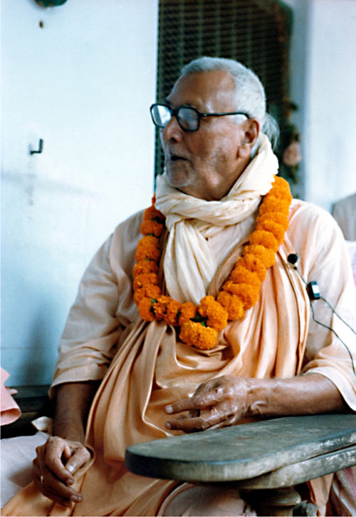
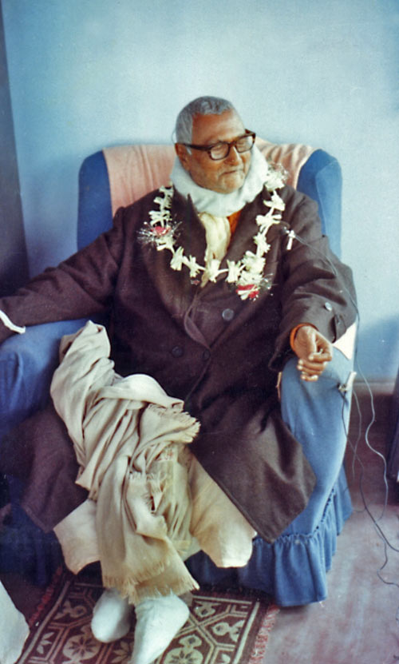

Ом Вишнупада Парамахамсы Паривраджакачарья-варья
Сарва-шастра-сиддханта-вит Аштоттара-шата
Шри Шримад Бхакти Ракшака
Шридхара Дев-Госвами Махараджа
В святой обители, земля которой исполняет все желания,
в Шри Навадвип Дхаме – неотличной от Шри Вриндавана,
на земле Коладвипы, равноценной Шри Говардхану,
близ чарующих берегов святой реки Бхагиратхи (Ганги),
спасающей все падшие души из океана самсары,
возвышается великий и славный царь всех храмов –
Шри Чайтанья Сарасват Матх.
В этом прекрасном месте предавшиеся души,
живущие лишь посланием Шри Гауранги,
вечно поглощены любовным служением
духовному учителю, Золотому Господу Гауре
и прекрасному Господу Шри Говиндасундару,
Которых постоянно сопровождают Их вечные спутники.
С сердцами, всегда исполненными великой надежды
обрести беспричинную милость Господа,
с великой верой следуя пути, что указали
Шри Шри Рупа и Рагхунатха,
которые оберегают несметные сокровища
чистой и сладостной божественной любви,
эти полностью предавшиеся души
всегда воспевают бесконечную славу
трансцендентного Имени и качеств самого милостивого
Предвечного Всевышнего, Господа Шри Гаурасундара.
Воистину, сердца всех существ, движущихся и неподвижных,
Покорены славой Шри Чайтанья Сарасват Матха,
И они принимают прибежище под прохладной сенью
Победоносного знамени, что развивается в вышине,
И чистосердечно воспевают по всему миру
непрестанно увеличивающуюся славу Шри Чайтанья Сарасват Матха.
Так, под знаменем всех божественных благословений,
Шри Чайтанья Сарасват Матх всегда ослепительно сияет
Во всем своем несравненном величии!
Шри Шримад Бхакти Ракшак Шридхар Дев-Госвами Махарадж
МАТЕРИАЛЬНЫЙ МИР
1. Материальное никогда не может стать источником счастья. Наша сделка с миром смерти не способна удовлетворить нас; она приведет лишь к потере наших сил.
2. Сейчас мы на чужбине, а ум наш увлечен посторонними предметами. Мы беспомощно кидаемся из стороны в сторону. Единственная наша надежда – милость посланников Бога.
3. Там, где присутствуют четыре недруга:
джанма
,
мритью
,
джара
,
вьядхи
– рождение, смерть, старость и болезни, не может быть никакого подлинного счастья.
4. Мы не принадлежим этому вероломному миру. Нам противно его вероломство, опьяняющее нас и заставляющее жить на пропитанной предательством земле. То, что сейчас представляет собой нечто, через мгновение станет ничем. Мы должны оставить это и стремиться к чему-то реальному, к
сат
,
чит
,
анандам
– вечному бытию, неоскверненному сознанию, и, наконец, к тому, что удовлетворит все наши глубинные потребности, захватит собой все наше существо.
5. Созидание, разрушение, созидание, разрушение – и так без конца в этом мире ложного понимания. Но в то же самое время существует иной мир, который вечен. Нам необходимо попасть туда, обрести свой дом там, где никто не оказывается в пасти смерти, где нет страданий.
6. «Я должен попытаться освободиться от моих нынешних страданий и вопрошать о мире, где мог бы жить счастливо». Придя к такому заключению, мы будем искать истинного посредника этого высшего мира и советоваться с ним о том, как можно освободиться от нынешнего нежелательного окружения.
7. Мы – крошечные души, и многое кажется нам чудесным. Йоги и мистики могут явить множество чудес и привлечь нас ими. Крошечную душу легко пленить всевозможными чудесами. В мире много могущественных чудотворцев. Не дай нам Бог попасться им в руки.
8. Будучи бесконечно малыми, должны ли мы думать, что бесконечное контролируется нами, и что лишь благодаря нам все происходит? Это самое извращенное и отвратительное из всего, что можно вообразить, и мы страдаем от этой болезни.
9. Этот мир всецело относителен. Мы не должны позволять себе подпадать под влияние пессимизма из-за любых, происходящих здесь событий. Мы должны уверенно продвигаться вперед в нашем движении по направлению к Истине. Мы можем потерпеть поражение в любое время и в любом месте, но это не имеет никакого значения. Возможно, такова воля нашего Повелителя. Но, как бы то ни было, у нас нет никакой иной альтернативы, кроме как пытаться обрести Его милость, Его благоволение.
ЗНАНИЕ
10. Неправильно стремиться узнать все о Божественном. Знание может обладать определенной ценностью здесь, в этом мире, но относительно трансцендентной истины высочайшего уровня стремление познать все – это дисквалификация.
11. То, что мы считаем «общепринятым понятием о чистоте», то, что мы воспринимаем как знание, – все это дисквалификация в доставлении удовлетворения Абсолюту.
12. Иногда разумное обоснование, логика и анализ необходимы, но только для того, чтобы проповедовать обычным людям, обладающим более низким уровнем понимания. Но когда преданность становится спонтанной, анурага , тогда и разум, и писания начинают занимать второстепенное положение. Здесь нет места аргументации священных писаний. До известного предела разум необходим для нашего развития – вплоть до ваидхи-бхакти , начальных уровней преданного служения. Но затем он становится совершенно ненужным.
ПОИСК
13. Кришна утверждает:
сарва дхарма паритйаджйа мам экам шаранам враджа
[«Оставь все виды религий и просто предайся Мне» (Бхагавад-гита, 18.66)]. Мы должны устремляться в любом направлении, где бы ни увидели Его. Направление может меняться. Наш путь может быть зигзагообразным, но если Кришна появляется с другой стороны, я должен кинуться туда. Он вновь появляется с этой стороны – значит, я должен устремиться сюда. Меня интересует только Он. Я не должен подвергать сомнению Его присутствие: «Почему это Кришна появился здесь, с этой стороны?» Нет. Если я искренне чувствую, что это нечто подлинное, нечто настоящее, то должен перейти на эту сторону, на сторону Кришны.
14. Если сознание общества препятствует развитию сознания Бога, подобное общество следует оставить.
СОЗНАНИЕ КРИШНЫ
15. Что такое сознание Кришны? Сознание Кришны – это подлинная любовь и красота.
16. Миром должны править подлинная любовь и красота, а не эгоизм и эксплуатация. Тому, кто хоть немного воспринял подлинное сознание Кришны, успех в духовной жизни гарантирован; не сегодня, так завтра.
17. Мы можем разочароваться, однако сознание Кришны никогда не оставит нас. Кришна будет упорно добиваться победы, и наступит момент, когда Он одержит ее. А все остальное, – неважно, как прочно оно укрепилось в нашем сердце, – уйдет прочь.
18. Реальность означает полностью развитый теизм – сознание Кришны – место, где ограниченное заключает в свои объятия все Безграничное. Безграничное нисходит для того, чтобы призвать, чтобы без остатка заключить в Свои объятия ограниченное, и это место – Вриндаван. Таков полностью развитый теизм: через сознание Кришны любая незначительная частичка ограниченного может ощутить блаженные объятия всего Безграничного.
19. Мы сознание, и мы предназначены для сознания Кришны, – таковы наши взаимоотношения. Мы должны всегда помнить об этом. Мы связаны с сознанием Кришны. Мы – жители мира сознания Кришны. Но мы начали скитаться по чужой земле мирского сознания,
майика
, ложного восприятия, думая, что мы частички этого материального мира, но это не так.
20. Сознание Кришны – высочайшая благотворительность. Наш Гуру Махарадж [Шрила Бхактисиддханта Сарасвати Тхакур] обычно говорил, что этот мир изголодался по
кришна-катхе
. Мир страдает от недостатка сознания Кришны, бесед о Кришне и
кришна-киртана
.
21. Для того чтобы обрести сознание Кришны, не надо быть ни очень мудрым, ни очень энергичным, не нужно иметь в своем распоряжении великое богатство или могущество, – требуется только обладать необыкновенно горячим стремлением к обретению Кришны. Постепенно обнаружится определенная сладость, определенный вкус к Его словам и Его деяниям, если, конечно же, слушать о Нем из авторитетного источника, от истинного святого. Этот вкус будет постепенно возносить такую душу все выше и выше – до высочайшего уровня.
22. Осознанно или неосознанно, каждая душа занимается поисками божественной любви. И, тем не менее, различные виды препятствий возникают для того, чтобы поколебать нашу решимость. Но сердце не удовлетворится до тех пор, пока не достигнет цели. Однажды начавшись, наше путешествие к Кришне никогда и нигде не может быть остановлено. Это всего лишь вопрос времени: может пройти очень, очень много времени, могут пролететь целые века, но мы обязательно в конечном итоге достигнем цели.
23. Помогая другим, мы помогаем себе; мы помогаем себе, культивируя нашу собственную удачу и веру. Не только другие получат благо от совершения
киртана
, но и мы также обретем вечное благо.
24. Повествования о Кришне подобны божественному нектару. Оттого не оставляйте это занятие, не прекращайте раздавать сознание Кришны, и вы сами будете получать его в изобилии. Оно будет нисходить свыше. Если вы будете искренне распространять сознание Кришны, ваш собственный капитал никогда не оскудеет. Вам будет дан новый капитал: столько, сколько сумеете дать другим. Вы будете получать его из неиссякаемой сокровищницы. Поэтому – не останавливайтесь!
25. Мы должны сказать «нет» своей интеллектуальности, амбициям и мирским устремлениям. Во всем этом нет необходимости. Это лишь погоня за ветром. Никогда это не поможет нам достичь своей цели. Сердце отвергнет это. Итак, мы должны пытаться обнаружить то естественное, что никак не может быть приобретено как результат какой бы то ни было длительной программы исследований. Это нечто совершенно естественное. Мы должны лишь избавиться и проститься навеки с гнездящейся в нас неискренностью.
ВЕРА
26. Когда мы разорвем связь со всеми проявлениями чувственного опыта, мы будем жить только верой. Когда все богатство нашего опыта начнет обманывать нас и предавать, нашим единственным спасением станет вера.
27. Таков мир опыта: здесь все ведет в могилу. Но вера не предаст. Она останется внутри, вместе с душой, и подарит ей надежду, цель и живительную силу. Что это за сила? Тепло родного дома. Домой, к Богу!
28. Отбрось все, стремись обрести только веру и ты получишь все. Не требуй никаких доказательств, ибо это низко. Выискивать доказательства того, что Он существует, – низость. Кто обладает глубокой верой, тот уже знает: «Да, Он существует».
29. Кто обладает верой в вайшнавов, тот обретет подлинную преданность.
30. Ом означает большое «да» – то, что ты ищешь, действительно существует; то, чего ты жаждешь в глубине сердца, действительно существует.
31. Вера – единственное средство, благодаря которому мы можем увидеть, услышать или почувствовать высший мир; в противном случае, все это для нас полностью лишено смысла. Для того чтобы постичь тот уровень, необходимо внутреннее пробуждение. Связать себя с высшим миром можно только через высший источник. Потому
дивья гьянам
, знание с высшего уровня, – не обыкновенное знание. Оно трансцендентно и находится за пределами деятельности ума, чувств и ощущений.
32. Мы не можем приблизиться к Кришне через восходящий процесс, но Он может низойти на наш уровень для того, чтобы открыть Себя. Необходимо понять это очень важное фундаментальное положение: Он может низойти к нам, и только благодаря вере мы можем прийти к Нему.
33. Вера не имеет никакой связи с так называемой реальностью этого мира. Она совершенно независима. Существует мир, который управляется исключительно верой (
шраддха-майам-локан
). Там вера – это все, она всеохватывающа и безгранична. В мире веры все может оказаться истинным по сладостной воле Господа.
34. Не позволяйте процессу спора завладеть вами. Логическая аргументация – не самое важное; это не то, к чему следует обращаться для выяснения каждого вопроса веры.
ГУРУ
35. Необходимо обрести общение с подлинно реализованной душой, и тогда все встанет на свои места. Царь
садху
– это Гуру.
36. Гуру – врач высшей квалификации. Мы осознаем его уровень тогда, когда сможем увидеть ту подлинную реальность, о которой он говорит.
37. Нежное прикосновение милосердной руки Шри Гуру может иссушить нескончаемые слезы, струящиеся из всех плачущих глаз.
38. Господь, в ответ на наше искреннее желание встретиться с Ним, отправляет Своего представителя в облике Гуру, чтобы утолить нашу жажду высшей истины. Мы должны видеть его как представителя Бога.
СВЯТОЕ ИМЯ
39. Когда Кришна входит в сердце через слух, Он покоряет лотос сердца и постепенно заставляет всю грязь исчезнуть. Подобно тому, как вода становится чистой с приходом осени, так же и, когда Кришна входит в наше сердце, все нечистоты постепенно исчезают, лишь один Кришна остается там навсегда.
40. Обычный звук имени и звук, произнесенный чистым преданным Бога, приходят с разных планов. Различие во внутреннем могуществе. Святое Имя нисходит из духовного мира и раскрывает Себя, танцуя на языке. Трансцендентный звук Святого Имени неразрывно связан с Личностью, которую Он представляет.
41. Если мы изо всех сил не желаем меняться и придерживаемся нашей прежней жизни, то это оскорбление против Имени: мы приглашаем Его, а затем ни во что не ставим.
42. Не следует считать Святое Имя чужим: Имя Бога – наш самый лучший друг. С Ним мы обретем полный душевный покой.
43. Мы должны обращаться к Имени с нежным, любящим чувством. Святое Имя – единственный объект нашей любви. Это наш друг, мы должны научиться доверять Имени. Святое Имя обязательно приведет нас домой; мы не окажемся на чужбине.
44.
Киртанам
означает не только громкое воспевание, но и проповедь. А проповедь означает бой с оппозицией.
Киртанам
будет бороться со всеми обычными вибрациями, распространяемыми в этом мире тонких и грубых волн.
45. Невозможно достичь цели всего лишь увеличением количества имен, которые мы повторяем; лишь повышая качество воспевания, можно достичь успеха.
46. Наше воспевание Святого Имени Кришны должно быть пронизано настроением служения, стремлением удовлетворить Кришну.
47. Для того чтобы быть действенным, звук Святого Имени Кришны должен обладать божественным качеством. Святое Имя Кришны, которое безгранично, сможет полностью уничтожить все нежелательное внутри нас; но Имя должно быть насыщено истинным духовным пониманием. Оно не должно быть всего лишь физической имитацией, произведенной только при помощи губ и языка.
48. Святое Имя должно быть насыщено подлинной духовностью, а не какими бы то ни было мирскими сантиментами.
49. Просто слово «Кришна» – это не Святое Имя. Важно значение этого звука и глубина восприятия, глубокое проникновение в значение этого Имени. Все перечисленное – наиболее важный фактор в процессе достижения нашей цели.
50. Чистое Имя абсолютно не отлично от Кришны, но Оно нисходит на наш уровень только по Его милости. Мы не сможем произнести Его, просто двигая языком и губами. Чистое Имя Кришны – не что-то поверхностное, но Оно исходит из самого сердца. И в конечном итоге Оно превосходит уровень сердца и достигает обители Кришны. Когда Кришна нисходит сюда, Имя Кришны проходит через сердце и начинает приводить в движение наши губы и язык. Эта звуковая вибрация и есть Святое Имя Кришны,
кришна-нам
.
51. Святое Имя не производится нашими чувствами. Это можно осознать только тогда, когда мы приближаемся в Нему в умонастроении очень интенсивного служения. Тогда Кришна Сам может низойти по Своей милости, привлеченный нашим умонастроением служения. Тогда Он может повлиять на нас и породить трансцендентный звук и танец в пределах этого материального плана существования. Это и есть Святое Имя,
вайкунтха-нам
, подлинное Имя Кришны. Мы не можем воспроизвести Его своими губами.
52. Звук, который мы порождаем своими физическими органами чувств или умом, – не Кришна. Он абсолютно независим от любого звука, который мы можем произвести, и, тем не менее, поскольку Он контролирует все, Он может появиться где угодно, в любой форме, на любом плане и в любом звуке.
ПРЕДАННЫЕ
53. Ни сила, ни знание не играют там [в духовном мире] никакой роли, но Сладчайший Абсолют покоряется любви Своего преданного.
54. Когда наше внимание обращено на преданных, с их помощью мы поднимаемся на очень высокую ступень веры. Когда наше внимание обращено на преданных, мы в безопасности. Они возвышаются, как многочисленные столпы, и доказывают присутствие Бога.
55. Интуиции чистого преданного следует отдавать предпочтение перед основывающемся на вычислениях знании, полученном обыкновенными людьми.
56. Мы познаем сладость общения с преданными Бога. Мы нашли детей своей земли, встретили тех, кто пришел из нашего дома! Если наше внутреннее удовлетворение таково, значит, мы более или менее в безопасности.
57. Мы должны обращаться к преданным за верой. Они как столпы веры – своими поступками, своим примером, – они стоят как столпы, устремляющиеся в небеса, служащие доказательством существования Бога. Отвергая все соблазны этого мира, они стоят с высоко поднятыми головами, утверждая и провозглашая свой опыт общения с Высшим Существом.
ПРЕДАННОСТЬ
58. Когда мы утверждаем, что в какой-то мере обладаем преданностью, – у нас ее нет. Скорее, когда мы чувствуем, что совсем ее лишены, хоть и не стремимся ни к чему другому, тогда мы, наверное, в какой-то мере совершенствуемся.
59. Самопредание – основа нашей величайшей удачи. Если мы повстречаем что-то действительно прекрасное и ценное, то нам не остается ничего, кроме как посвятить себя ему. Уровень нашего самопредания покажет, насколько мы ценим эту высочайшую истину. Поэтому мы можем измерить качество истины, с которой соприкоснулись, лишь силой своего самопредания.
60. И хотя внешне может казаться, что мы отдаем себя в рабство, в действительности все наоборот. Если вы сможете принять такое настроение самопредания и полной покорности, то Господь, Которого невозможно покорить, будет покорен. Друзья придут и помогут вам,
садху
явятся и объяснят, что мы должны стать рабами, ибо Кришна больше всего любит тех, кто Ему беззаветно предан. Он господин рабов, и иногда Он хочет стать рабом Своего раба (
гопи-бхартух пада-камалайор даса-дасанудасах
[«Чайтанья-чаритамрита», Мадхья, 13.80]). Это ключ к успеху, и через подобное умонастроение мы сможем достичь высочайшего предназначения.
61. Для того чтобы постичь Абсолют, мы должны стать рабами; такова подлинная цена. Мы должны вручить себя в качестве рабов игре Его сладостной воли.
62. Лишь там, где существует искренняя преданность, возможна подлинная свобода.
63. Даже великие философы и выдающиеся религиозные деятели не способны понять качество жизни того, кто предался Кришне, – что тогда говорить об обычных людях!
64. Все в порядке с Безграничным и окружением. Мы должны исправить, подкорректировать только самих себя. Таково заключение: «Пытайся исправить себя; с твоим окружением нет проблем. Мы должны предаться Всевышнему и вести себя соответственно». Это принесет нам подлинный мир и прогрессирующее осознание в духовной жизни.
65. Даже чтение писаний станет преданностью только тогда, когда мы читаем по указанию вайшнава; самовольное чтение – не более чем накопление знаний.
66. Где пребывает
бхакти
? Каковы признаки чистой преданности? Там, где Высший Властитель подчиняется Своему слуге, – это
бхакти
. Преданность занимает столь особое положение и обладает таким могуществом.
67. Бхакти – ниргуна , пребывает за пределами влияния сил материальной природы, и оно – ахайтуки , беспричинно, – этот божественный поток будет вечно продолжать свое течение. Также оно – апратихата : бхакти никогда не может быть оставлено никем. Оно необратимо.
СЛУЖЕНИЕ
68. Мы всегда должны стремиться служить, занимая более низкое положение, и только Господь может силой возвысить нас, если пожелает. Сам же слуга всегда ищет более скромного служения:
дасйайа те мама расо’сту
– «Я желаю служить как слуга, а не как друг». Таким должно быть настроение преданного. Тогда он в безопасности.
69. Проповедь,
санкиртана
, а не перебирание четок,
джапа
, – реальное служение Кришне. Но так как мы дали обет, и это назначено Махапрабху и нашим Гурудевом, мы должны воспевать Святое Имя на четках, это наш долг.
70. Быть преданным значит служить; служение – это все.
71. Любой опыт, связанный с Господом, передается сверху вниз. От нас здесь ничего не зависит. Мы можем только усилить свое желание, свое стремление служить Господу ( севанмукхата ), а низойдет Он в наше измерение или нет – на то Его воля.
ГОСПОДЬ НИТЬЯНАНДА
72. Сначала мы должны обрести милость Господа Нитьянанды. Тогда, впоследствии, мы сможем получить милость Радхи-Кришны.
73. Шри Чайтанья Махапрабху – это Радха и Кришна ( шри кришна чаитанйа радха-кришна нахе анйа ). Сначала нужно обрести милость Нитьянанды Прабху, затем – Гауранги Махапрабху, а потом – Шри Шри Радха-Говинды. Таковы должны быть три стадии нашего прогресса.
ШРИ ЧАЙТАНЬЯ МАХАПРАБХУ
74. Шри Чайтанья Махапрабху и «Шримад-Бхагаватам» учат нас тому, что следует просить, о чем молить и чего желать. Они провозглашают: «Если вы о чем-то молите, то молите о Кришне, и ни о чем другом».
75. Шри Чайтанья Махапрабху, наш наиболее благожелательный Господь, пришел сюда, чтобы отыскать Своих давным-давно потерянных слуг и даровать им высочайший идеал божественной любви.
76. «Брахма-сутра» советует нам вопрошать об изначальной причине, величайшей и всеохватывающей. Но Шри Чайтанья Махапрабху направил наш поиск к иной цели. «Шримад-Бхагаватам» определил его как кришнанусандхану , поиск Шри Кришны.
ЛЮБОВЬ И КРАСОТА
77. Обычно, видя красоту, мы полагаем, что она предназначена для нашего наслаждения, но, в действительности, красота повелевает всем и все контролирует.
78. Основной принцип любви – самопожертвование: но ради кого? И кто принимает его? Каждый должен жертвовать Центру, а не тянуть энергию оттуда. «Умереть, чтобы жить». С таким духом нам следует объединиться и трудиться ради истинной любви и красоты. И красота победит во всем мире! Любовь одержит победу! Мы пожертвуем всем, чтобы знамя божественной любви развевалось над миром, ибо даже частица этой божественной любви способна принести подлинный мир и распространить его повсюду.
79. Сила любви немыслима. Хоть это и представляется невозможным, Безграничное побеждается ограниченным. Что это за немыслимое положение? Его можно обрести только благодаря любви.
80. Красота и блаженство реальны, а все остальное – только внешнее покрытие. Если тратить слишком много энергии на внешнее, мы не сможем обрести его содержимое.
ДУХОВНАЯ ОБИТЕЛЬ
81. Самый обширный и бескрайний план всего мироздания – это красота, сладость и блаженство, и все это присутствует во Вриндаване во всей полноте. Необходимо глубоко погрузиться в этот план реальности.
82. Существует земля нектара, и мы дети этого бессмертного нектара. Так или иначе, мы были обмануты здесь, но, в действительности, мы дети той земли, которая вечна, где нет рождения и смерти.
83. В царство Бога мы можем войти лишь как рабы, а не господа. Мы должны преклонить там свою голову; мы должны покориться. Мы должны оставить мысли о том, чтобы с высоко поднятой головой почивать там на лаврах, ибо весь тот мир обладает более высокой природой, нежели мы.
84. Духовная реальность – это вечное существование, исполненное сознания и блаженства. Одно существование не может удовлетворить нас. И даже внутренних устремлений и переживаний, сознания, не достаточно. Для того чтобы обрести удовлетворение, нам требуются
раса
[духовные отношения] и
ананда
, блаженство.
85. В том духовном царстве каждый будет любить нас. Можно нисколько не беспокоиться о своих собственных интересах, но окружение там будет настолько благоприятным и доброжелательным по отношению к нам, что мы даже не сможем этого измерить, подобно тому, как ребенок не может оценить силу любви, переживаемой его матерью. Таким образом, нас будут окружать друзья и домашний уют, и с этим сознанием мы возвратимся назад к Богу, назад домой.
86. Красота того уровня такова, что даже то, что здесь относят к низшей категории, там приводится в гармонию таким образом, что оно обретает высочайшее положение.
ШРИ БХАКТИ РАКШАКА ВАНИ
87. Милость выше справедливости.
88. Не следует думать, что окружающее – наш враг. Необходимо пытаться видеть во всем, что к нам приходит, милость Господа, даже если это кажется настроенным враждебно. Все есть милость Бога, но мы не видим этого; мы видим прямо противоположное. Грязь в наших глазах. В действительности, все божественно. Милость Господа во всем. Но наши глаза больны. Мы больны, но если излечить эту болезнь, мы обнаружим себя посреди волн милосердного мира.
89. Каждый должен двигаться вперед постепенно, в соответствии со своими конкретными обстоятельствами. Если кто-то, склонный к мирской жизни, внезапно оставит ее, он может нарушить свои обеты; то есть, может снова быть отброшен назад. Потому мы должны совершать прогресс согласно индивидуальным способностям.
90. Если какое-либо противодействие неожиданно приходит к нам, нужно изо всех сил стараться проявлять смирение. Необходимо постоянно помнить о том, что Хранитель неизменно следит за нами, с великой готовностью оказать нам помощь в пути. Мы не одни.
91. Если мы будем думать, что находимся на высочайшем уровне, Высшая Реальность скроется от нас. И поэтому мы должны взирать на нее с почтительного расстояния. Если мы будем пытаться смотреть открыто, то упустим ее из виду, но если мы попытаемся рассматривать этот уровень через какую-либо завесу или из какого-либо укрытия, то тогда мы сможем видеть.
92. Приблизиться к Всевышнему можно только через смирение, и когда мы достигнем Его, то уже более не захотим знать ни о чем другом. Мы не станем уделять никакого внимания тому, что сейчас происходит или не происходит во внешнем мире. Мы будем глубоко погружены в служение Ему ради Его удовлетворения.
93. Именно идеал делает человека великим, а не какое-либо материальное достижение. Тот, кто обладает высочайшим идеалом, в действительности богат.
94. Блаженство может существовать само по себе. Ни бытие, ни сознание не самодостаточны. В изолированном положении сознание стремится к блаженству. А бытие без сознания – существование без цели. Но когда к бытию добавляется сознание, они могут стремиться обрести свое подлинное благо: блаженство. Блаженство – независимая и наиболее реальная субстанция. И бытие, и сознание занимают подчиненное положение по отношению к нему.
ШРИ КРИШНА
95. Пробуждайтесь! Поднимайтесь! Ищите свою удачу и вы, несомненно, обретете успех. Это ваше по праву рождения. Это богатство вашей души. В действительности, у вас нет иного занятия, кроме
кришнанусандханы
, поиска Шри Кришны – Прекрасной Реальности.
96. Свобода и все остальные атрибуты Верховной Личности не ограничены и трансцендентны, поэтому они всего лишь в силу своей природы создают гармонию вокруг.
97. Кришна – не мифический герой, Он реален. Мы изо всех сил будем пытаться показать вам, что это действительно так. Кришна реален. Он – Сама Реальность, и Реальность ради Себя Самой.
98. Первое, что необходимо понять, – то, что Господь сама доброта, и поэтому все, исходящее от Него, не может не быть благом. Все несовершенства исходят от нас.
99. Мы могли возвести со всех сторон высокие стены, чтобы помешать сознанию Кришны войти в наше сердце, но Кришна – вор, а вор не нуждается в приглашении.
100. Господь занят любовным поиском своих потерянных слуг: сильнейшее стремление выражено здесь в простой форме. Он целиком поглощен этим поиском и исполнен величайшей решимости. С великой готовностью Кришна приходит для того, чтобы освободить Своих потерянных слуг. Кришна приходит для того, чтобы забрать нас домой. Поиск Господом Своего потерянного слуги – любовный поиск; это не что-то заурядное, это исходит из самого сердца. И сердце Господа – не обычное сердце. Кто сможет оценить то, каким поиском занимается Господь? Хотя Он самодостаточен во всех отношениях, Он все равно ощущает боль разлуки с каждым из нас, какими бы незначительными мы ни были. Несмотря на Его верховное положение, в Его любящем сердце всегда есть место для нас. Такова природа Безграничного. Таков абсолютный властитель, абсолютное благо – Кришна!
101. Если мы только сможем развить правильное восприятие, улыбающееся лицо Господа выступит из-за завесы. Кришна очень красив, и Он с великой готовностью принимает наше служение.
102. Реальность Сама для Себя и Сама по Себе. Мир создан не ради наших эгоистических целей; во всем присутствует универсальная цель, а мы всего лишь маленькие частички этого. Нам следует понять, что есть целое. Полное целое – Кришна, и кроме Его воли не существует никакого другого закона.
103. Хотя много нежелательного может встречаться на нашем пути, Кришна защитит нас. И этот удивительный Повелитель коров, воплощенный в холме Говардхан, оградит нас от всех трудностей. Каким образом? Бог творит чудеса. Его пути неведомы и непостижимы.
104. Следует приближаться к Нему, постоянно помня о том, что Он живет и сейчас. Он не просто нечто застывшее. Не надо ожидать только того, что уже было когда-то прежде. Каждое мгновение, каждую секунду Он может явить все, что угодно, совершенно по-новому.
105. Существует только один способ, благодаря которому Его можно постичь: кого бы Он ни избрал для того, чтобы явить Себя, тот может Его постичь.
106. Не желающий обманывать себя, нормальный человек не сможет избежать поиска Шри Кришны. Одна из главных составляющих нашей природы – стремление к поиску счастья. Это основное стремление всех живых существ. Поиск Шри Кришны означает поиск расы , высочайшей формы блаженства.
ШРИМАТИ РАДХАРАНИ
107.
Радха-дасьям
– высочайшая цель. Почему? Такого количества
расы
столь высокого качества, которую Радхарани может извлечь из Кришны, никогда и нигде более нельзя обнаружить. Поэтому, если вы обрели положение сразу за Радхарани, вам будет дано насладиться не только количеством, но и высочайшим качеством
расы
.
108. Служение тем, кто может служить Радхарани, – это путь к обретению места в Ее окружении. Служа слугам слуг, мы можем быть уверены, что обретем милость Кришны.